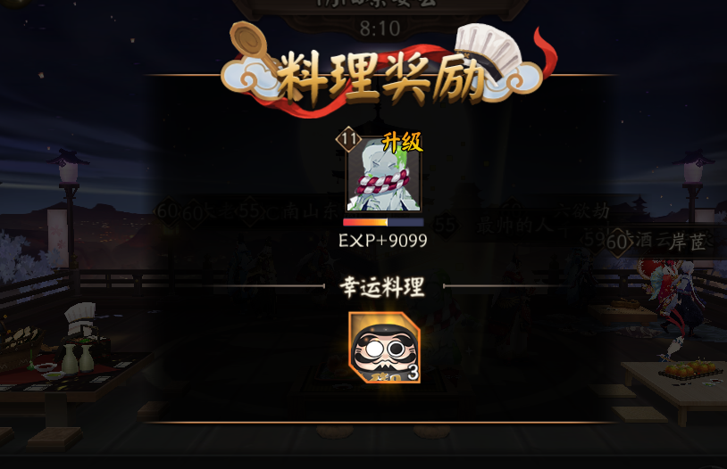
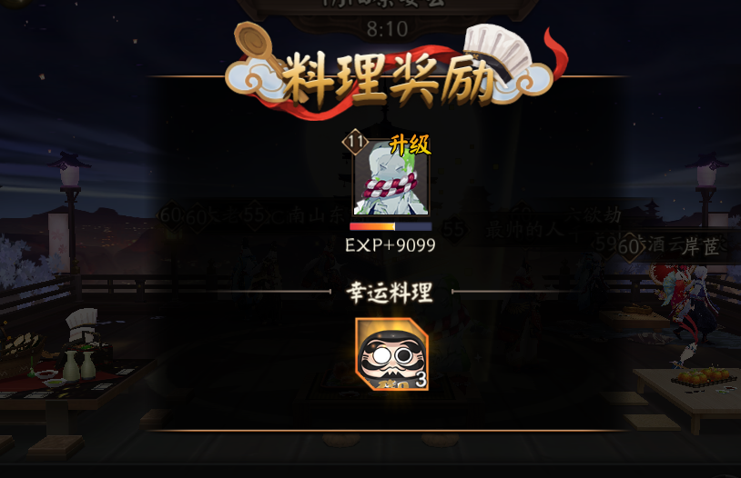

对爱情的渴望，对知识的追求，对人类苦难不可遏制的同情心，这三种纯洁但无比强烈的激情支配着我的一生。这三种激情，就像飓风一样，在深深的苦海上，肆意地把我吹来吹去，吹到濒临绝望的边缘。
我寻求爱情，首先因为爱情给我带来狂喜，它如此强烈，以致我经常愿意为了几小时的欢愉而牺牲生命中的其他一切。我寻求爱情，其次是因为爱情解除孤寂——那是一颗震颤的心，在世界的边缘，俯瞰那冰冷死寂、深不可测的深渊。我寻求爱情，最后是因为在爱情的结合中，我看到圣徒和诗人们所想象的天空景象的神秘缩影。
这就是我所寻求的，虽然它对人生似乎过于美好，然而最终我还是得到了它。
我以同样的热情寻求知识，我希望了解人的心灵。我希望知道星星为什么闪闪发光，我试图理解毕达哥拉斯的思想威力，即数字支配着万物流转。这方面我获得一些成就，然而并不多。
爱情和知识，尽可能地把我引上天堂，但同情心总把我带回尘世。痛苦的呼号的回声在我心中回荡，饥饿的儿童，被压迫者折磨的受害者，被儿女视为可厌负担的无助的老人，以及充满孤寂、贫穷和痛苦的整个世界，都是对人类应有生活的嘲讽。我渴望减轻这些不幸，但是我无能为力，而且我自己也深受其害。
这就是我的一生，我觉得它值得活。如果有机会的话，我还乐意再活一次。
 

end